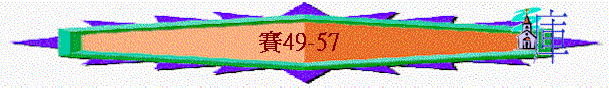

|
在 黑 暗 時 代 中 的 信 息（1-66） |
|||||
|
在變質國度中的斥責 |
在君亡噩訊中的異象 |
在無助孤身中的應許 |
在爭戰世界中的預言 |
在危難困境中的經歷 |
在暗淡前景中的安慰 |
|
1-5 |
6 |
7-12 |
13-35 |
36-39 |
40-66 |
六.在暗淡前景中的安慰(40-66)
1.認識無可比的神(40-48)
2.認識大能的救主(49-57)
＊針對選民的質疑：懷疑神的能力
＊針對選民的問題：投靠遠方的邦國及假神
＊常用類似的字句：『我的膀臂豈是縮短，不能救贖嗎？』
＊中心主角： 『我的僕人』－－>指向彌賽亞－－>顯出救恩的能力
A.救主的重要→救恩的中心(49:1-13)
＊問題：『我卻說，我勞碌是徒然，我盡力是虛無虛空．．．』49:4
～有解經家指42:1-4,49:1-6,50:4-9,52:13-53:12為4首僕人之歌，預表將來的耶穌基督
～而昔日主來到世間，從人的角度看，祂所作的事情不受當時的人歡迎，甚至釘祂在十字架上，但在神及救恩角度上，這位僕人來到世間是十分重要的事，所作也不徒然！
a.父神的榮耀
「眾海島啊，當聽我言！遠方的眾民哪，留心而聽！自我出胎，耶和華就選召我；自出母腹，他就提我的名。他使我的口如快刀，將我藏在他手蔭之下；又使我成為磨亮的箭，將我藏在他箭袋之中；對我說：你是我的僕人以色列；我必因你得榮耀。」49:1-3
「我在地上已經榮耀你，你所託付我的事，我已成全了。」約17:4
～神選召基督來到世間，祂的口如刀如箭代表祂說話滿有能力
～祂也代表以色列，因以色列的意思是神的王子，基督也是從以色列的後裔而生
～祂也會榮耀神，神也因主得榮耀
b.雅各的復興
「耶和華從我出胎，造就我作他的僕人，要使雅各歸向他，使以色列到他那裡聚集。原來耶和華看我為尊貴；我的神也成為我的力量。」49:5
c.外邦人的光
「現在他說：你作我的僕人，使雅各眾支派復興，使以色列中得保全的歸回尚為小事，我還要使你作外邦人的光，叫你施行我的救恩，直到地極。」49:6
「因為主曾這樣吩咐我們說：我已經立你作外邦人的光，叫你施行救恩，直到地極。」徒13:47
d.眾民的中保
「耶和華如此說：在悅納的時候，我應允了你；在拯救的日子，我濟助了你。我要保護你，使你作眾民的中保（中保：原文作約）；復興遍地，使人承受荒涼之地為業。」49:8
「我必使我的眾山成為大道；我的大路也被修高。看哪，這些從遠方來；這些從北方、從西方來；這些從秦（原文作希尼）國來。諸天哪，應當歡呼！大地啊，應當快樂！眾山哪，應當發聲歌唱！因為耶和華已經安慰他的百姓，也要憐恤他困苦之民。」49:11-13
「因為他說：『在悅納的時候，我應允了你；在拯救的日子，我搭救了你。』看哪！現在正是悅納的時候；現在正是拯救的日子。」林後6:2
「如今耶穌所得的職任是更美的，正如他作更美之約的中保；這約原是憑更美之應許立的。」來8:6
～神藉耶穌與選民重申立約，要復興他們，領他們重返家園
～而秦國應指當時埃及的最南，尼羅河上游一帶
～救主的來臨，神藉救主的工作，成為百姓很大的安慰
B.父神的憐恤→救恩的基礎(49:14-29)
＊問題：『鍚安說，耶和華離棄了我，主忘記了我。』49:14
～人可能仍會懷疑神是否離開他們，忘記他們，但神拯救的基礎是祂的憐憫，祂仍愛選民，必然拯救他們
a.深刻的眷愛
「婦人焉能忘記他吃奶的嬰孩，不憐恤他所生的兒子？即或有忘記的，我卻不忘記你。看哪，我將你銘刻在我掌上；你的牆垣常在我眼前。」49:15-16
～神不忘記祂的兒女，以色列及以色列城的牆垣也常在神眼前
b.肯定的拯救
(1)必得歸回
「你的兒女必急速歸回；毀壞你的，使你荒廢的，必都離你出去，」49:17
(2)必得榮耀
「你舉目向四方觀看；他們都聚集來到你這裡。耶和華說：我指著我的永生起誓：你必要以他們為妝飾佩戴，以他們為華帶束腰，像新婦一樣。」49:18
「列王必作你的養父；王后必作你的乳母。他們必將臉伏地，向你下拜，並舔你腳上的塵土。你便知道我是耶和華；等候我的必不至羞愧。」49:23
～能得仇敵的妝飾，能得列邦的下拜，是選民的榮耀，至終他們必不至羞愧
(3)必得拯救
「但耶和華如此說：就是勇士所擄掠的，也可以奪回；強暴人所搶的，也可以解救。與你相爭的，我必與他相爭；我要拯救你的兒女。」49:25
C.真神的能力→救恩的可靠(50)
＊問題：『我來的時候，為何無人等候呢？我呼喚的時候，為何無人答應呢？我的膀臂豈是縮短，不能救贖嗎．．．．』50:2
～他們也因犯罪，被神賣給外邦(被擄)，如被休的婦人一樣，但當神差派祂的僕人及先知呼喚他們，他們卻不理神，可能寧願尋求偶像或別國，也不回應神，他們或許也質疑神的能力，是否可靠及有能力拯救他們
a.真神的大能
「我來的時候，為何無人等候呢？我呼喚的時候，為何無人答應呢？我的膀臂豈是縮短、不能救贖嗎？我豈無拯救之力嗎？看哪，我一斥責，海就乾了；我使江河變為曠野；其中的魚因無水腥臭，乾渴而死。我使諸天以黑暗為衣服，以麻布為遮蓋。」50:2-3
b.義僕的忠信
(1)聆受聖言順服天命
「主耶和華賜我受教者的舌頭，使我知道怎樣用言語扶助疲乏的人。主每早晨提醒，提醒我的耳朵，使我能聽，像受教者一樣。主耶和華開通我的耳朵；我並沒有違背，也沒有退後。」50:4-5
(2)忍受逼迫完成使命
「人打我的背，我任他打；人拔我腮頰的鬍鬚，我由他拔；人辱我，吐我，我並不掩面。」50:6
(3)相信真神不至蒙羞
「主耶和華必幫助我，所以我不抱愧。我硬著臉面好像堅石；我也知道我必不至蒙羞。稱我為義的與我相近；誰與我爭論，可以與我一同站立；誰與我作對，可以就近我來。主耶和華要幫助我；誰能定我有罪呢？他們都像衣服漸漸舊了，為蛀蟲所咬。」50:7-9
～義僕來到世間，雖面對很多困難，但靠神的幫助，祂可以完成神救恩的工作
～義僕也相信神的能力及神的幫助，選民也應相信神可靠的
c.應當的回應
(1)當倚靠耶和華
「你們中間誰是敬畏耶和華、聽從他僕人之話的？這人行在暗中，沒有亮光。當倚靠耶和華的名，仗賴自己的神。」50:10
(2)否則自遭惡果
「凡你們點火，用火把圍繞自己的可以行在你們的火焰裡，並你們所點的火把中。這是我手所定的；你們必躺在悲慘之中，」50:11
～若人倚靠別的神或自己的方法，要在黑暗中找曙光，至終如點火卻落在火燄中的悲慘光景！
D.穩妥的計劃→救恩的內容(51-54)
＊問題：『．．．．你是誰？竟怕那必死的人，怕那要變如草的世人。』51:12
～本段多「怕」及「堅定」字眼，人會因敵人感懼怕，但當人認識神堅定的救恩計劃時，人的心可不懼怕！
a.永恆的計劃
(1)起初的揀選
「你們這追求公義、尋求耶和華的，當聽我言！你們要追想被鑿而出的磐石，被挖而出的巖穴。要追想你們的祖宗亞伯拉罕和生養你們的撒拉；因為亞伯拉罕獨自一人的時候，我選召他，賜福與他，使他人數增多。」51:1-2
～被鑿而出的磐石等字眼是形容神選召亞伯拉罕的事，神當初已揀選以色列人的祖先亞伯拉罕，應許他人數增多
(2)求遠的堅定
「我的百姓啊，要向我留心；我的國民哪，要向我側耳；因為訓誨必從我而出；我必堅定我的公理為萬民之光。我的公義臨近；我的救恩發出。我的膀臂要審判萬民；海島都要等候我，倚賴我的膀臂。你們要向天舉目，觀看下地；因為天必像煙雲消散，地必如衣服漸漸舊了；其上的居民也要如此死亡（如此死亡：或作像蠓蟲死亡）。惟有我的救恩永遠長存；我的公義也不廢掉。」51:4-6
～天地會廢去，但神對祂所揀選的人所定的救恩乃公義不會廢去
～而公義即神的義會在救恩中彰顯(神要審判惡人，也要稱信他的人為義)
b.父神的作為
(1)過往的大能
(A)出埃及
「耶和華的膀臂啊，興起！興起！以能力為衣穿上，像古時的年日、上古的世代興起一樣。從前砍碎拉哈伯、刺透大魚的，不是你嗎？使海與深淵的水乾涸、使海的深處變為贖民經過之路的，不是你嗎？」51:9-10
～拉哈伯是古代近東神話的怪物，形容埃及神昔日擊打埃及，拯救選民，引領他們走乾地
(B)創天地
「惟有我，是安慰你們的。你是誰，竟怕那必死的人？怕那要變如草的世人？卻忘記鋪張諸天、立定地基、創造你的耶和華？又因欺壓者圖謀毀滅要發的暴怒，整天害怕，其實那欺壓者的暴怒在那裡呢？」51:12-13
(2)將來的作為
(A)祂挪去怒杯
「你的主耶和華就是為他百姓辨屈的神如此說：看哪，我已將那使人東倒西歪的杯，就是我忿怒的爵，從你手中接過來；你必不至再喝。我必將這杯遞在苦待你的人手中；他們曾對你說：你屈身，由我們踐踏過去吧！你便以背為地，好像街市，任人經過。」51:22-23
～神昔日忿怒的杯會從以色列中挪走，轉移至敵人身上
(B)神救贖選民
「耶和華如此說：「你們是無價被賣的，也必無銀被贖。」52:3
(C)神親自歸回
「那報佳音，傳平安，報好信，傳救恩的，對錫安說：你的神作王了！這人的腳登山何等佳美！聽啊，你守望之人的聲音，他們揚起聲來，一同歌唱；因為耶和華歸回錫安的時候，他們必親眼看見。」52:7-8
～作守望及報消息的人會傳喜訊—神作王乃神回到他們中間
(D)神親自保護
「你們離開吧！離開吧！從巴比倫出來。不要沾不潔淨的物；要從其中出來。你們扛抬耶和華器皿的人哪，務要自潔。你們出來必不至急忙，也不至奔逃。因為，耶和華必在你們前頭行；以色列的神必作你們的後盾。」52:11-12
c.義僕的落實
～神的救恩不單是要選民歸回，肉身得救，祂的救恩中心是要除去人的罪，與人建立新約，如何落實，要藉義僕—基督耶穌落實
(1)義僕的工作
(A)洗淨人的罪
「這樣，他必洗淨（或作：鼓動）許多國民；君王要向他閉口。因所未曾傳與他們的，他們必看見；未曾聽見的，他們要明白。」52:15
～祂主要的工作不單是對以色列人，而是對許多國民，要徹底洗淨他們的罪
(B)作全地的主
「我的僕人行事必有智慧（或作：行事通達），必被高舉上升，且成為至高。」52:13
～神也會將祂升為至高，作全地的主
(2)義僕的受苦
(A)被人藐視
(a)藐視祂的信息
「我們所傳的（或作：所傳與我們的）有誰信呢？耶和華的膀臂向誰顯露呢？」53:1
(b)藐視祂整個人
「他在耶和華面前生長如嫩芽，像根出於乾地。他無佳形美容；我們看見他的時候，也無美貌使我們羨慕他。他被藐視，被人厭棄；多受痛苦，常經憂患。他被藐視，好像被人掩面不看的一樣；我們也不尊重他。」53:2-3
(B)背負痛苦
(a)受擊打
「他誠然擔當我們的憂患，背負我們的痛苦；我們卻以為他受責罰，被神擊打苦待了。哪知他為我們的過犯受害，為我們的罪孽壓傷。因他受的刑罰，我們得平安；因他受的鞭傷，我們得醫治。」53:4-5
(b)被欺壓
「他被欺壓，在受苦的時候卻不開口（或作：他受欺壓，卻自卑不開口）；他像羊羔被牽到宰殺之地，又像羊在剪毛的人手下無聲，他也是這樣不開口。」53:7
(c)嘗死味
「因受欺壓和審判，他被奪去，至於他同世的人，誰想他受鞭打、從活人之地被剪除，是因我百姓的罪過呢？他雖然未行強暴，口中也沒有詭詐，人還使他與惡人同埋；誰知死的時候與財主同葬。」53:8-9
(3)帶來的果效
(A)得後裔
「耶和華卻定意（或作：喜悅）將他壓傷，使他受痛苦。耶和華以他為贖罪祭（或作：他獻本身為贖罪祭）。他必看見後裔，並且延長年日。耶和華所喜悅的事必在他手中亨通。」53:10
(B)得稱義
「他必看見自己勞苦的功效，便心滿意足。有許多人因認識我的義僕得稱為義；並且他要擔當他們的罪孽。」53:11
d.選民的得恩
(1)得後裔
「你這不懷孕、不生養的要歌唱；你這未曾經過產難的要發聲歌唱，揚聲歡呼；因為沒有丈夫的比有丈夫的兒女更多。這是耶和華說的。要擴張你帳幕之地，張大你居所的幔子，不要限止；要放長你的繩子，堅固你的橛子。因為你要向左向右開展；你的後裔必得多國為業，又使荒涼的城邑有人居住。」54:1-3
～無兒無女的選民，將來必有更多兒女，神使他氜後裔增加，地界也自然擴張！
(2)得憐恤
「我離棄你不過片時，卻要施大恩將你收回。我的怒氣漲溢，頃刻之間向你掩面，卻要以永遠的慈愛憐恤你。這是耶和華你的救贖主說的。」54:7-8
「大山可以挪開，小山可以遷移；但我的慈愛必不離開你；我平安的約也不遷移。這是憐恤你的耶和華說的。」54:10
～神會憐恤祂的百姓，祂的慈愛必不離開他們
(3)得華美
「你這受困苦、被風飄蕩不得安慰的人哪，我必以彩色安置你的石頭，以藍寶石立定你的根基；又以紅寶石造你的女牆，以紅玉造你的城門，以寶石造你四圍的邊界（或作：外郭）。」54:11-12
～女牆指城垣，神用華美寶石的比喻表達將來新城的建立之榮美
(4)得平安
「你的兒女都要受耶和華的教訓；你的兒女必大享平安。你必因公義得堅立，必遠離欺壓，不至害怕；你必遠離驚嚇，驚嚇必不臨近你。即或有人聚集，卻不由於我；凡聚集攻擊你的，必因你仆倒（或作：投降你）。」54:13-15
(5)得保護
「凡為攻擊你造成的器械必不利用；凡在審判時興起用舌攻擊你的，你必定他為有罪。這是耶和華僕人的產業，是他們從我所得的義。這是耶和華說的。」54:17
E.萬民的轉機→得恩的途徑(55-57)
＊問題：『你們為何花錢買那不足為食物的，用勞碌得來買那不使人飽足的呢？』55:2
～他們只追求肉身的需要，卻得不著心靈的滿足，真正的滿足是從神中得恩典，人要歸回祂身邊
a.萬民的轉機
(1)尋求真神
～55章很多「就近」「尋求」字眼
(A)近前來—白得恩典
「你們一切乾渴的都當就近水來；沒有銀錢的也可以來。你們都來，買了吃；不用銀錢，不用價值，也來買酒和奶。」55:1
(B)就近神—聽好信息
「你們當就近我來；側耳而聽，就必得活。我必與你們立永約，就是應許大衛那可靠的恩典。我已立他作萬民的見證，為
～神將好信息給他們—神會堅定當初祂與大衛所立的求，應許他的國要到永遠，將來素不認識以色列的人，也會歸向選民
(C)尋求神—得赦免
「當趁耶和華可尋找的時候尋找他，相近的時候求告他。惡人當離棄自己的道路；不義的人當除掉自己的意念。歸向耶和華，耶和華就必憐恤他；當歸向我們的神，因為神必廣行赦免。」55:6-7
(2)相信神意
「耶和華說：我的意念非同你們的意念；我的道路非同你們的道路。」55:8
「我口所出的話也必如此，決不徒然返回，卻要成就我所喜悅的，在我發他去成就（發他去成就：或作所命定）的事上必然亨通。你們必歡歡喜喜而出來，平平安安蒙引導。大山小山必在你們面前發聲歌唱；田野的樹木也都拍掌。」55:11-12
～神的意念高於人的意念，人難理解，但祂至終的意念是要選民得恩，從被擄的環境出來，人只管相信神有美好的意念
(3)謹守神話
「耶和華如此說：你們當守公平，行公義；因我的救恩臨近，我的公義將要顯現。」56:1
(A)便為有福
「謹守安息日而不干犯，禁止己手而不作惡；如此行、如此持守的人便為有福。」56:2
(B)蒙神記念
「與耶和華聯合的外邦人不要說：耶和華必定將我從他民中分別出來。太監也不要說：我是枯樹。」56:3
～即使從前被閹割的人及外邦人不得入神的殿，但若謹守神的話，神也會記念他們
(C)蒙神悅納
「還有那些與耶和華聯合的外邦人，要事奉他，要愛耶和華的名，要作他的僕人，就是凡守安息日不干犯，又持守他（原文作我）約的人。我必領他們到我的聖山，使他們在禱告我的殿中喜樂。他們的燔祭和平安祭，在我壇上必蒙悅納，因我的殿必稱為萬民禱告的殿。」56:6-7
b.百姓的悖逆
(1)失職放盪
「他看守的人是瞎眼的，都沒有知識，都是啞巴狗，不能叫喚；但知做夢，躺臥，貪睡，這些狗貪食，不知飽足。這些牧人不能明白，各人偏行己路，各從各方求自己的利益。他們說：來吧！我去拿酒，我們飽飲濃酒；明日必和今日一樣，就是宴樂無量極大之日。」56:10-12
～以色列中看守的人及牧人也失職，只知貪求安逸宴樂，不理羊群及義人
(2)行淫悖逆
「你們這些巫婆的兒子，姦夫和妓女的種子，都要前來！你們向誰戲笑？向誰張口吐舌呢？你們豈不是悖逆的兒女，虛謊的種類呢？你們在橡樹中間，在各青翠樹下慾火攻心；在山谷間，在石穴下殺了兒女；」57:3-5
～他們敬拜偶像，不歸向真神，如淫亂的人
(3)不怕真神
「你怕誰？因誰恐懼？竟說謊，不記念我，又不將這事放在心上。我不是許久閉口不言，你仍不怕我嗎？」57:11
c.至終的結果
(1)痛悔者----得神醫治
「因為那至高至上、永遠長存（原文作住在永遠）名為聖者的如此說：我住在至高至聖的所在，也與心靈痛悔謙卑的人同居；要使謙卑人的靈甦醒，也使痛悔人的心甦醒。」57:15
「我看見他所行的道，也要醫治他；又要引導他，使他和那一同傷心的人再得安慰。我造就嘴唇的果子；願平安康泰歸與遠處的人，也歸與近處的人；並且我要醫治他。這是耶和華說的。」57:18-19
(2)行惡者—不得平安
「因他貪婪的罪孽，我就發怒擊打他；我向他掩面發怒，他卻仍然隨心背道。」57:17
「我的神說：惡人必不得平安！」57:21